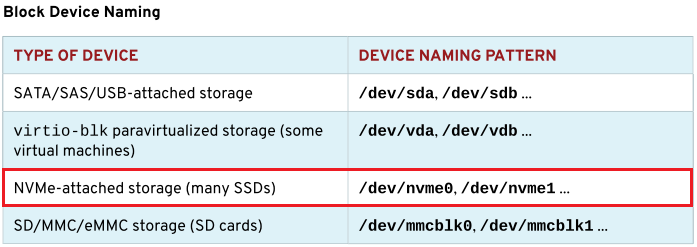

第十五章 访问Linux文件系统
目标：
- 访问、检查和使用附加至Linux服务器的存储上的现有文件系统。
章节：
- 识别文件系统与设备
- 挂载与卸载文件系统
- 查找系统上的文件
第一节：识别文件系统与设备
目标：
- 完成本节后，学生应该能识别文件系统层次结构中的目录，以及它存储在哪一设备上。
文件系统与挂载点：
- 对于Linux文件系统层次结构，无需知道特定文件所在的存储设备，只需要知道该文件
所在的目录即可。
- 但需要知道存储设备与目录的关联关系，及空间使用情况。
- 文件系统可以挂载到一个目录上，该目录称为挂载点（mount point），挂载支持手动
挂载和自动挂载。
文件系统、存储与块设备：
- Linux中，对存储设备的低级别访问是访问块设备（block device）文件。
- 在挂载这些块设备前，必须先使用文件系统对其进行格式化。
- 块设备存储在/dev目录中。
- 在RHEL中，第一个SATA/PATA、SAS、SCSI或USB设备称为/dev/sda，第二个被称为/dev/sdb，
以此类推。


* 注意：
1. 根据不同virtio驱动来命名不同的磁盘盘符。
2. virtio_blk内核模块：/dev/vdX；virtio_scsi内核模块：/dev/sdX。

磁盘分区：
- 存储设备通常划分为更小的区块，称为分区（partition）。
- 不同分区可以通过不同的文件系统进行格式化或用于不同的用途。
- 分区本身就是块设备。
- 第一磁盘上的第一个分区是/dev/sda1，第二磁盘上的第三个分区是/dev/sdb3，
vda分区类似。
- NVMe SSD命名略有不同。
- 第一磁盘上的第一个分区是/dev/nvme0p1，第二磁盘上的第三个分区是/dev/nvme1p3，
SD或MMC存储卡分区类似。

逻辑卷：
- 逻辑卷管理（LVM）可用于整理磁盘和分区。
- 一个或多个块设备可以汇集为一个存储池，称为卷组（volume group）。
- 卷组中的磁盘空间被分配到一个或多个逻辑卷（logical volume），它们的功能等同于物理磁盘上的分区。
- LVM的目录结构类似/dev/myvg/mylv，其中myvg为卷组，mylv为逻辑卷。
- /dev/mapper/myvg_mylv是另一种命名方式。
- 以上两种均为实际设备文件的软链接。
检查文件系统：
- df命令用于显示文件系统的空间状态与挂载点。

- 为增加可读性，可以添加 -h 或 -H 选项， -h 单位是 KiB（2^10）、MiB（2^20）
或 GiB（2^30），-H 单位是 SI 单位，即 KB（10^3）、MB（10^6）或 GB（10^9）。

- du命令可以查看特定目录使用空间状况，同样可以使用 -h 和 -H 选项。


练习 P532：IDENTIFYING FILE SYSTEMS AND DEVICES
第二节：挂载与卸载文件系统
目标：
- 完成本节后，学生应该能通过在文件系统层次结构中添加和删除文件系统，访问文件
系统的内容。
手动挂载文件系统：
- 文件系统需要挂载后才能访问，mount命令允许root用户手动挂载文件系统。
- mount命令的第一个参数指定要挂载的文件系统，第二个参数指定在文件系统层次结构
中用作挂载点的目录。
- 文件系统可以用/dev或UUID（通用唯一标识符）方式表示。
识别块设备：
- 每次连接到系统时，热插拔存储设备，不管是服务器中的硬盘驱动器（HDD）或固态设备
（SSD）还是USB存储设备都可能插接到不同的端口上。
- lsblk命令查看指定块设备或所有可用设备的详细信息。

按块设备名称挂载：
- 若要挂载文件系统，目标目录（挂载点）必须已存在。
- 默认情况下，/mnt目录存在并用作临时挂载点。

* 注意：
1. 若使用的挂载点不为空目录，将指定的文件系统挂载至该挂载点后，其中的所有
文件与目录将不可访问，直到新挂载的文件系统卸载为止。

按文件系统UUID挂载：
- UUID稳定与文件系统关联，这是一个非常长的十六进制数字，用作通用唯一标识符。
- 只要文件系统没有重新创建，UUID就会保持不变。
- $ lsblk -fp：列出设备的完整路径、UUID、挂载点以及分区中文件系统的类型

- 使用UUID挂载文件系统

* 注意：推荐使用UUID方式进行挂载，防止文件系统盘符变化。
自动挂载可移动存储设备：
- 可移动存储设备将挂载到/run/media/<user_name>/<label>
卸载文件系统：
- 关机和重新引导过程会自动卸载所有文件系统。
- 关机时，缓存在内存中的任何文件系统数据都会刷新到存储设备。
- 文件系统数据通常缓存在内存中。
- 因此，为了避免损坏磁盘上的数据，务必先卸载可移动驱动器，然后再拔下它们。
- 卸载过程会在释放驱动器之前同步内存中的缓存数据，以确保数据完整性。
- $ umount <mount_point>：卸载文件系统

- 无法卸载文件系统可能的原因：
1. 当前工作目录为挂载点或其子目录中

2. 某些进程占用挂载点或其子目录
$ lsof <directory>：查看进程使用的目录列表

练习 P538：MOUNTING AND UNMOUNTING FILE SYSTEMS
第三节：查找系统上的文件
目标：
- 完成本节后，学生应该能使用find和locate在挂载的文件系统中搜索文件。
搜索文件：
- locate命令搜索预生成索引中的文件名或文件路径，并即时返回结果。
- find命令通过遍历整个文件系统来实时搜索文件。
根据名称搜索文件：
- locate命令从mlocate数据库中查找，速度比较快。
- 但数据库不会实时更新，必须经常更新才能保持结果准确。
- locate数据库每日自动更新，updatedb命令可以手动更新。
- locate命令与update命令由mlocate软件包提供。
- $ locate <pattern>：查找匹配模式的文件
- $ locate -i <pattern>：忽略匹配模式中的大小写查找文件
- $ locate -n <number> <pattern>：查看指定前几行的文件列表

实时搜索文件：
- find命令通过在文件系统中实时（real time）搜索来查找文件。
- 它比locate命令慢，但准确度更高。
- find命令还可以根据文件权限、文件类型、文件大小或修改时间、按文件名搜索文件。
- 按文件名搜索文件（可使用通配符）示例：
$ find / -name sshd_config：查找文件名为sshd_config的文件
$ find /etc -name '*pass*'：/etc目录中查找具有pass字段的文件名
$ find / -iname '*messages*'：执行不区分大小写的文件名查找
- 基于所有权或权限搜索文件示例：
$ find <dir> -user <username>：查找所属指定用户的文件
$ find <dir> -group <groupname>：查找所属指定组的文件
$ find <dir> -uid <uid>：查找所属指定UID的文件
$ find <dir> -gid <gid>：查找所属指定GID的文件
* 注意：
1. -perm选项⽤于查找具有特定权限集的文件。
2. 权限可以描述为⼋进制值，包含代表读取、写⼊和执⾏的 4、2 和 1 的某些组合。
3. 权限前⾯可以加上 / 或 - 符号。
4. 权限前面有 / 的数字权限将匹配文件的用户、组、其他⼈权限集中的至少一位（or）。
5. 权限前带有 - 符号表示该位的所有三个权限都必须存在（and）。
6. 与 / 或 - 一起使用时， 0 值类似于通配符，因为其表示⾄少⽆任何内容的权限。
$ find <dir> -perm 764
# 查找用户具有读取、写入与执行权限，并且组具有读取、写入权限，并且其他人具有读取权限。
$ find <dir> -perm -324
# 查找用户至少具有写入和执行权限，并且组至少具有写入权限，并且其他人至少具有读取权限。
$ find <dir> -perm /442
# 查找匹配用户具有读取权限，或者组至少具有读取权限，或者其他人至少具有写入权限的文件。
$ find <dir> -perm -002
# 查找目录中其他人至少具有写入权限的任何文件
- 基于大小搜索文件：
$ find <dir> -size 10M：查找大小为10M的文件
$ find <dir> -size +10G：查找大小大于10G的文件
$ find <dir> -size -10k：查找大小小于10k的文件
- 基于修改时间搜索文件：
$ find <dir> -mmin +200：查找200分钟以前修改过的文件
$ find <dir> -mmin -150：查找150分钟以内修改过的文件
- 基于文件类型搜索文件：
$ find <dir> -type d：查找指定目录中的所有目录
$ find /dev -type b：查找系统上的所有块设备文件
$ find <dir> -type f -links +1：查找指定目录中硬链接数大于1的文件
$ find <dir> -type f -links -2：查找指定目录中硬链接数小于2的文件
* 注意：f为普通文件，d为目录，l为软链接，b为块设备。
* find命令常用示例：
- $ find /home -user foo -o -user bar -type f -perm /642 -size -5M
# /home目录中查找所属foo用户或bar用户，所有者可读可写、或者所属组可读、或者其他用户
可写的权限，大小小于5M的文件。
- $ find /etc -iname '*.conf' -exec cp {} /tmp/conf.bak \;
# /etc目录中查找名称中具有conf的文件，并将其拷贝至/tmp/conf.bak目录中
- $ find / -type d -perm 777 -exec chmod 755 {} \;
# 根目录中查找权限为777的目录，并将其更改为755权限。
- $ find / -type [f|d] -empty
# 根目录中查找空文件或空目录
练习 P548：LOCATING FILES ON THE SYSTEM
Lab P551：ACCESSING LINUX FILE SYSTEMS